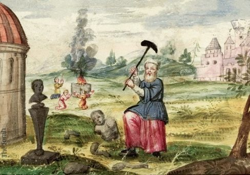
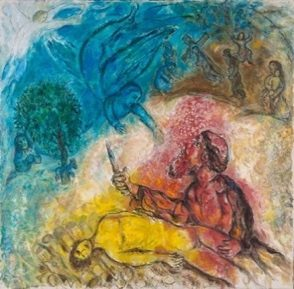
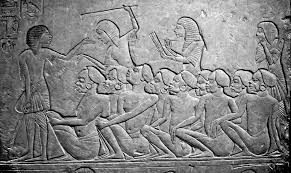
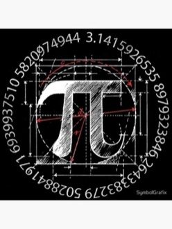
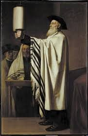

Leh’ Leha 5786 :
A la recherche du Hessed perdu
Après la pluie… le temps du Hessed
L’histoire humaine démarrait mal.
Adam, le grand absent de la création1, incapable de mesurer la grandeur de la sagesse divine a fauté et ses enfants se perdent dans un monde dévoyé. Noa’h, le seul qui trouve grâce à Ses yeux, se révèle incapable de discourir2 et de convaincre la création entrainant D. à discerner le bon du mauvais de sa création et à la reformater.
La Teva, l’arche construite par Noa’h, donne ainsi naissance à un nouveau monde. Et même si celui-ci n’a rien à avoir avec l’ancien3, une constante subsiste : la créature continue à défier son créateur.
Mais D. a fait une promesse à Noa’h : Il ne détruira plus le monde. Et s’Il devait manifester l’envie de le faire, Il ferait apparaître un arc-en-ciel pour signifier aux hommes Sa retenue.
Nos sages4 nous enseigne qu’à l’image d’un prisme qui diffracte la lumière blanche (contenant toutes les couleurs) en un faisceau multicolore, l’arc en ciel vient symboliser un changement dans la conduite du monde par le Créateur. Désormais, Il fera descendre Son émanation au niveau des midot (émanations divines inférieures, traduites par “qualités” ou “mesures”), au nombre de sept (comme les couleurs de l’arc-en-ciel) et c’est à travers ces sept “gants” qu’Il choisira d’agir sur le monde. |
|---|
Car n’oublions pas que le projet divin est de faire de l’Homme Son associé et qu’il attend pour cela avec patience qu’il prenne sa place dans l’Histoire.
Il va donc retenir sept humains d’exception, afin de leur confier la mission d’exprimer le panel des couleurs à travers lesquelles Il agit dans le monde et installer sa majesté.
C’est dans ce contexte qu’apparaît Avraham, notre premier patriarche, le premier homme de l’Histoire capable d’incarner une mida la première : le Hessed, la bonté.
Avraham, l’incarnation du Hessed
À peine entrevu dans la généalogie des descendants de Noa’h, Avraham surgit dans le récit :
la Torah élude les soixante-quinze premières années de sa vie et nous rapporte directement l’ordre divin qui l’invite à tout quitter pour se rendre en terre de Canaan et recevoir la bénédiction divine.
Et tout le monde s’interroge : pourquoi passer sous silence le début de sa vie, sa construction personnelle, ses épreuves, ses découvertes ? Qui était donc ce personnage hors normes ?
Nos Sages, sans complaisance (voir plus bas, page 4), décrivent un homme en proie au doute, cherchant à comprendre ce qu’il perçoit de D., se trompant parfois, errant souvent. Et presque sans pudeur, ils le rendent responsable d’un certain nombre de nos tourments, passés et présents.
On pourrait, certes, psychanalyser le rapport des enfants d’Israël à leur patriarche rendu coupable de leurs douleurs ; mais efforçons-nous plutôt de le comprendre et surtout de saisir pourquoi D. l’a choisi, lui, comme étendard du monothéisme et fondateur du peuple d’Israël, malgré ses apparentes défaillances.
Les Sages du Midrash nous racontent la vie d’Avram, ainsi qu’il se nomme à ses débuts, pour nous enseigner ses qualités hors normes de chercheur du divin et d’homme de bonté.
Dès son plus jeune âge, il s’interroge :
|
 |
|---|
Avram n’hésite pas à déconstruire, et même à détruire, ce que lui a transmis son père Téra’h, chef spirituel du polythéisme de son temps. Progressivement, en interrogeant le monde, il remonte de cause en cause jusqu’à la Cause des causes. Et c’est Elle qui, finalement, le trouve.
“Le rabbin Yitzḥak a dit : C'est analogue à celui qui passait d'un endroit à l'autre et qui a vu un bâtiment avec une [bougie] allumée dedans. Il a dit : « Est-il possible que ce bâtiment n'ait personne en charge ? » Le propriétaire de l'immeuble l'a regardé et a dit : « Je suis le propriétaire du bâtiment. » Donc, parce qu'Abraham notre patriarche disait : « Est-il possible que ce monde soit sans quelqu'un en charge ? » Le Saint soit béni Il l'a regardé et lui a dit : « Je suis le propriétaire du monde. » “
(Midrash berechit raba 39,1)
Sa recherche intellectuelle et scientifique, portée par sa curiosité et son amour du Créateur, déclenche en lui une révélation personnelle.
Il devient ainsi le premier Sachant de l’histoire, celui par qui naîtront des peuples de croyants, et diffuse son savoir sans limites. Mais cette quête n’est pas sans conséquences : Avraham traversera de nombreuses épreuves. Jeté dans la fournaise pour avoir refusé de se soumettre au polythéisme, il résiste par conviction, mais surtout par amour pour son Créateur : car aimer, c’est connaître.
Avraham est celui qui aime D. et Ses créatures. Il est prêt à donner sa vie, à ouvrir sa tente pour accueillir les voyageurs, les nourrir et leur enseigner qu’il existe un Créateur à remercier. Il convertit son entourage au monothéisme, prend les armes pour sauver son neveu, plaide avec D. pour défendre les justes parmi les impies de Sodome et Gomorrhe, et accepte même de se circoncire à l’âge de quatre-vingt-dix-neuf ans.
| Nous verrons, dans la paracha Vayéra, que par amour pour D., Avraham ira jusqu’à accepter l’ultime épreuve : celle de sacrifier Its’hak, son fils unique, par lequel devait s’établir l’histoire de son peuple. Il y reniera, toutes ses convictions et tout ce qu’il croyait avoir compris de D. |  |
|---|
À telle enseigne que le nom d’Avraham (obtenu par l’ajout de la lettre hé à la fin de la paracha) reflète son adéquation aux mitsvot positives, celles qui sont actives, les « tu feras » (par opposition aux mitsvot négatives, les « tu ne feras pas »). Ces commandements étant guidés par l’amour de l’autre et par l’amour de D.
“C’est pourquoi le nombre des commandements positifs est de 248 (ramach), en correspondance avec la valeur numérique du nom Avraham (אברהם), car toutes les mitsvot positives découlent de la racine spirituelle d’Abraham, l’homme de la bonté et de l’action divine.”
Zohar, Addenda, Volume II 9
Ce nombre, 248, se retrouve également dans le compte des mots qui composent les trois paragraphes du Chema Israël, car aimer D., c’est vouloir Le connaître et Le servir.
Il n’y a pas d’amour sans preuves d’amour nous enseigne Avraham, on peut et on doit aimer D. dans son cœur, mais cet amour doit aussi s’exprimer : en aimant Ses créatures, en agissant avec bonté, et en cherchant à Le connaître de toutes ses forces.
C’est sans doute pour cette raison que nos Sages, notamment le Rambam, ont transformé l’élan d’amour que l’homme ressent naturellement pour son Créateur en un commandement positif : « Tu aimeras l’Éternel ton D. » (premier passage du Chema Israël). Ils expliquent qu’il s’agit, précisément, de s’efforcer de Le connaître.
Ce lien indissoluble entre l’amour et la connaissance anime toute la quête spirituelle d’Avraham : il ne se contente pas de croire, il cherche à comprendre, à questionner, à aller au-delà des apparences.
C’est cette soif de connaissance, unie à un amour inconditionnel, qui fait de lui un modèle intemporel et grandiose, et qui lui permet d’incarner l’attribut de ‘Hessed, la bonté divine.
Mais nos sages nous mettent en garde, la bonté, l’amour de l’autre peuvent être dangereux, voir même néfaste.
Circonscrire le Hessed
Sans limites, le hessed pourrait avaler le monde.
Nous le savons tous : l’amour peut être dangereux, l’histoire regorge d’exemples de meurtres passionnels, de guerres au nom de l’amour de D., d’hommes et de femmes qui justifieront l’impossible par amour. Les pires horreurs de l’humanité ont parfois été commises au nom de l’amour.
Quelques exemples permettent d’appréhender cette notion :
Nos Sages voient en Ichmaël, le fils d’Avraham et d’Hagar, le fruit d’un ‘Hessed mal canalisé, une bonté pervertie par une générosité sans bornes ni pudeur, menant à la débauche. Ils enseignent ainsi que la mida de ‘Hessed d’Avraham, perçue par Ichmaël comme une bienveillance sans restriction, a engendré « dix mesures de débauche (znout) descendues dans le monde ».
Le Midrach (Béréchit Rabbah 45:9) éclaire le surnom donné par l’ange à Ichmaël (Béréchit 16:12) : Pere adam : « un homme sauvage », débridé dans ses passions, enclin à la débauche et au vol.
Sur un autre registre pour qualifier les dangers du hessed, la torah emploie même ce terme « c’est une bonté » lorsqu’elle interdit à un homme d’avoir des rapports incestueux avec sa sœur : וְהִֽיא־תִרְאֶ֤ה אֶת־עֶרְוָתוֹ֙ חֶ֣סֶד ה֔וּא (Lévitique, 20, 17) littéralement : « elle verra la nudité de son frère : c’est un ‘hessed »
Le talmud nous avertissait déjà : « Quiconque se montre miséricordieux envers les cruels finira par se montrer cruel envers les miséricordieux ». (Rabbi El’azar dans le Midrach Tan’houma, Parachat Métsora’)
Pour bien comprendre les dangers d’un Hessed dévoyé, il faut se tourner vers le Sod Yecharim (sur pourim) qui explicite la face obscure de cette vertu appelée l’écorce de l’âne, la « klipat Hamoh ». En résumé : cette dérive mentale conduit l’homme à percevoir uniquement l’hyper-présence de D. sur terre, menant à l’idée d’un mektoub : d’une destinée immuable où le libre choix n’existe pas.
D. étant présent partout et en tout temps, l’homme conclut faussement qu’il agit toujours selon le plan divin. Si tout est voulu d’En-haut, alors, pense-t-il, tout est permis même au nom de D, même a priori.
Le judaïsme, au contraire, adopte une perspective radicalement différente, incarnée par Its’hak : la Loi est divine, et l’homme doit s’y plier. Ce n’est qu’a posteriori que l’on peut discerner comment nos actes s’inscrivent dans le plan divin.
Le hessed illimité est dangereux, le roi Salomon nous enseigne dans les proverbes : “ celui qui hait les présents vivra.” Proverbes 15 :27. Car l’amour gratuit, le hessed illimité pose problème aussi bien pour celui qui donne que pour celui qui reçoit.
C’est d’ailleurs si vrai que l’on pourrait relire la faute d’Adam et celle du veau d’or à travers cette dynamique : la haine de celui qui reçoit gratuitement le pain de la honte, même lorsqu’il provient du Créateur. L’homme qui ne travaille pas pour recevoir, qui dépend entièrement du don d’autrui, finissant par haïr celui qui lui donne - même s’il s’agit de D. Lui-même.
Le Hessed rend aveugle
Revenons au texte, qui semble nous montrer un Avraam5 aveuglé par son amour des autres et de D. tâtonnant dans l’obscurité à la recherche d’un peu de lumière (voir midrash cidré au premier paragraphe). Malgré sa grandeur, il demeure un homme en proie aux doutes, incapable de comprendre distinctement la parole divine.
L’un de ses doutes est d’ailleurs suffisamment grave, nous enseignent nos Sages (Nedarim 32a), pour justifier l’exil de ses descendants en Égypte : racine de tous les exils du peuple d’Israël à travers l’histoire.
Alors que D. renouvelle Son alliance avec Avraham, Se révélant à lui comme le sauveur miraculeux qui l’a délivré de la fournaise d’Our Kasdim pour le faire maître du pays de Canaan (qui deviendra plus tard la Terre d’Israël) celui-ci répond : « Comment saurai-je que j’en suis possesseur ? » (Béréchit 15,8) Nos Sages rapportent que la réponse du Créateur fut cinglante : quelques versets plus loin, Il annonce que ses descendants seront étrangers et esclaves pendant quatre cents ans afin qu’ils apprennent à apprécier la valeur de la Terre d’Israël. |
 |
|---|
Plus tard, lorsque D. lui annonce que Sarah enfantera, Avraham doute encore :
“Abraham tomba sur sa face et sourit ; et il dit en son coeur" Quoi ! un centenaire engendrerait encore ! et à quatre-vingt-dix ans, Sara deviendrait mère !" “
(Berechit17,18)
Pire encore, se méprenant sur le message divin, il implore pour la survie d’Ichmaël (l’ancêtre du monde arabe) se fourvoyant ainsi devant le Maître de l’univers. D. exaucera malgré tout sa prière et bénira Ichmaël, entraînant des conséquences dont l’histoire porte encore les répercussions.
La leçon est la suivante : une bienveillance dépourvue de filtres risque de soutenir le mal et de brouiller les frontières entre le juste et l’injuste.
Rabbi Shalom Sharabi (le Rashash) nous enseigne que le Hessed sans Guevoura (rigueur) donnerait indistinctement jusqu’aux kélipoth, ces « écorces » impures, permettant aux forces négatives de prospérer. Ceci créant alors une grande confusion dans le monde spirituel : le bien et le mal se mélangent, l’ordre divin est obscurci.
La lumière du hessed étant tellement puissante qu’elle en devient aveuglante.
Nos sages relient cet état à la notion de Safek (ספק, le doute) – un doute qui s’insinue lorsque la lumière de la bonté éclaire aussi ce qui ne devrait pas l’être. Ils nous enseignent aussi qu’Amalek, incarnation du mal absolu, a pour valeur numérique safek (240), soulignant que le doute destructeur provient d’une confusion entre le bien et le mal.
D. devra donc intervenir pour rétablir l’équilibre : le ‘Hessed absolu pose problème, car il tend à tout justifier au nom de l’amour et risque d’aveugler l’homme dans sa démarche sincère de recherche du divin.
Circoncire le Hessed
Compte tenu de ses errances mentales dues à un Hessed illimité, Le Créateur sera obligé d’intervenir pour modifier notre patriarche et l’emmener à bon port.
Il devra le recentrer sur lui-même « leh lekha » que l’on peut traduire par « va vers toi-même ».
Il l’abonde de bénédictions et de protections divines exceptionnelles (Magen avraham).
Il modifie son nom par l’ajout de la lettre hé, lui conférant une nouvelle destinée.
Et enfin, Il lui ordonne de se transformer physiquement en accomplissant la circoncision.
À la lecture du texte de la Torah, nous constatons que D. s’introduit dans la vie d’Avraham avec une grande parcimonie, presque au compte-gouttes (contrairement à Moché voir parachat Vaera). Les mots sont mesurés : D. fait preuve de pédagogie et de patience face aux errances d’Avraham. Il ne manifeste ni colère ni rejet ; au contraire, Il va jusqu’à accorder une bénédiction à Ichmaël pour satisfaire la demande d’Avraham.
Ainsi, au moment où Avraham recevra la première mitsva de l’histoire : la circoncision, le vocable divin employé est précis : D. se présente sous le nom de Chaddaï שד׳.
Les sages du Talmud nous enseigne que ce nom exprime la limitation de la création divine.
« Lorsque le Saint béni soit-Il a créé le monde, celui-ci s’étendait et s’étendait sans fin, jusqu’à ce que Dieu lui dise : “Dai !” (Assez !)”. C’est pourquoi on L’appelle Chaddaï : Celui qui dit à Son monde “Dai !” » Cheamar leolamo Dai » (Houlin 60a)
Nous comprenons dès lors le sens profond de la circoncision : canaliser le Hessed d’Avraham, au sens physique et spirituel et limiter son action à son fils Itshak.
 |
Enseignement de mon père : Le Nom Chaddaï, composé des lettres chin, dalet et youd, possède une valeur numérique égale à 314 : les trois premiers chiffres du célèbre nombre π (pi), qui permet de calculer la circonférence d’un cercle. Déjà mentionnée dans la Guemara Soucca bien avant l’avènement de la géométrie moderne, cette correspondance illustre une idée commune : celle de la circonscription. Tout comme π définit la limite d’un cercle, Chaddaï définit les limites de l’expansion divine. |
|---|
Remarquons, avec le Zohar et le Ari Zal, que le corps de l’homme lui-même peut former les lettres de ce Nom :
En levant les bras vers le ciel, il forme la lettre chin (ש) ;
En pliant le bras gauche, tendu dans la continuité de l’épaule et perpendiculaire au buste, il dessine un dalet (ד) ;
Et par la brit mila, lorsque le prépuce est retiré et la peau retournée en forme de couronne, se révèle le youd (׳).
C’est ce même Nom que nous inscrivons à l’extérieur des parchemins des mezouzot fixées aux portes de nos maisons, afin de circonscrire notre espace personnel, de le séparer du monde profane et d’y introduire davantage de sainteté, source d’une protection divine accrue.
C’est également ce Nom que nous formons de la main droite lors de la récitation du Chema Israël : les trois doigts du milieu forment un chin, le pouce plié un dalet, et l’auriculaire un youd.
Ce processus d’inscription du Nom divin sur le corps, par la circoncision, opère une transformation profonde de l’identité juive : Maîtriser l’élan vital pour le consacrer à une mission de sainteté et de transmission de la vérité
Choisir un Hessed de vérité
Maintenant que nous avons analysé le personnage d’Avraham et les limites de la vertu qu’il incarne, revenons à notre question initiale, pourquoi D. l’a choisi ?
Avraam n’aura de cesse de tâtonner dans l’obscurité du monde, cherchant D. partout où il peut, dans la nature, dans les hommes, dans lui-même aussi. Mais le caractère asymptomatique des lois naturelles borne l’homme : il ne peut découvrir D. par ses seules forces. Malgré tous ses efforts, il lui faudra une révélation, qui provoquera sa transformation d’Avraam en Avraham, d’un homme guidé par un hessed sans limite à un homme dont la bonté est désormais maitrisée, canalisée, prête à devenir le fondement du peuple juif.
Et c’est précisément lors de l’annonce de son élection que démarre sa transformation.
« Et Il [Hachem] le fit sortir dehors et dit : "Regarde, en direction du Ciel, et compte les étoiles, si tu peux les compter !" Et Il lui dit : "Ainsi sera ta descendance !" » Berechit 15:5 Rachi comprend la redondance de l’expression “fit sortir dehors” comme l’indice d’un geste divin d’élévation du patriarche au-delà des contraintes naturelles. D. extrait Avraham des limites du monde naturel et l’installe dans une dimension où la volonté divine prime sur la logique humaine. |
|---|
Par cette vision céleste, Avraham comprend que sa destinée, et celle de sa descendance, ne sera pas soumise aux lois ordinaires du monde, mais guidée par une relation directe intime et singulière avec le Créateur.
Et c’est bien Avraham, avec le hé de la Création, celui de yom Hachichi, ajouté par D. lui-même dans notre paracha lors de l’annonce de la mitsva de la brit mila, qui est choisi, éprouvé et façonné pour incarner un ‘Hessed délimité par la rigueur et la vérité de la loi. Ce hessed équilibré permet au monde d’exister et de se maintenir à chaque instant comme le résume le Zohar :
Il lui dit : « Voici, Moi, Je suis destiné à faire se lever en toi un juste, Abraham, qui M’aimera.» Aussitôt, le monde se maintint dans son existence. C’est ce que dit le verset : « Voici les engendrements des cieux et de la terre lors de leur création » (Béhibaram). Ne lis pas Béhibaram « lors de leur création » mais BeAvraham « par Avraham » ; car c’est par Avraham que le monde se maintient.
(Zohar Leh leha 22, 86a)
Mesure pour mesure, cette élection exprime la gratuité du hessed, un amour inconditionnel qui antérieur à tout calcul ou mérite, car même si nous ignorons pourquoi D. a créé le monde, nous croyons qu’il l’a fait pour déverser Son Bien (Son Tov) à ses créatures6 .
Ce choix d’Avraham ne relève donc pas d’un mérite intrinsèque, mais d’une volonté souveraine de D., dépassant toute logique humaine ou critère rationnel.
C’est pourquoi, le peuple des hébreux issu d’Avraham portera en lui cette dimension unique :
sa vocation n’est pas le fruit d’un patrimoine ou d’une supériorité, mais d’un appel divin, mystérieux et sans cause rationnelle.
Cette singularité continuera de marquer l’histoire juive, la reliant constamment à la source de cette élection, au-delà des contingences naturelles. Et c’est cette absence de rationalité qui fonde le peuple juif sur la seule volonté de D., et qui lui permet d’échapper aux lois naturelles de l’Histoire : survivre à toutes les destructions, multiplier les renaissances, susciter parfois la haine des nations, mais toujours demeurer porteur d’une mission.
 |
Le mystère de l’élection d’Avraham, dépassant la compréhension humaine, invite chaque génération à s’interroger sur le sens de son héritage. Il ne s’agit pas d’un privilège ancestral, ni d’une simple transmission généalogique, mais d’une responsabilité renouvelée : celle d’incarner et de diffuser le ‘Hessed, la bonté gratuite, dans le cadre de la Loi : la Torah. |
|---|
Yehi Ratson, puisses être Ta Volonté D. que l’on soit capable de t’aimer, et de canaliser notre amour dans tes mitsvots et l’étude de la Torah car tu nous as choisi par amour.
Chabat Chalom
Si on doit essayer de ne retenir qu’un point de comportement de cette étude
Nous savons bien dans nos vies que l’Amour, la bonté est une condition nécessaire à l’établissement de toute chose, un mariage, un foyer, une relation familiale, amicale... C’est le démarreur de nos vies. La force de la vitalité. D. lui-même n’a créé le monde que pour déverser sa bonté, soyons capable de faire de même et de créer des mondes de bonté, de hessed en les inscrivant dans la loi divine.
 L’idée de la semaine
L’idée de la semaine
La brit mila est aussi l’alliance des mots, de la parole, des justes mots que l’on utilise pour construire, instruire, éduquer, convaincre au retour vers D…
 Pour aller juste un peu plus loin…
Pour aller juste un peu plus loin…
Nous pourrions aussi aborder nos incompréhensions face aux doutes de notre père Avraham de la manière suivante :
Un enfant ne peut pas véritablement comprendre son parent, car il n’a pas accès à ce qu’il pense, seulement à ce qu’il fait.
Or, il arrive parfois qu’il n’y ait pas de parfaite adéquation entre la pensée, la parole et l’action du parent. L’enfant, se construisant à partir de ce qu’il perçoit extérieurement, peut alors être perturbé, puisqu’il ne connaît pas l’intériorité de celui sur qui il se modèle.
De la même manière, les mondes spirituels sont bâtis selon ce principe : l’extériorité d’un monde découle de l’intériorité du monde supérieur. Ce qui nous apparaît ici-bas n’est donc qu’une projection, une image réduite d’une réalité spirituelle plus haute, souvent inaccessible à notre compréhension.
Avraham, dans cette lecture, représente un monde très élevé, un monde entièrement fait de ‘Hessed, hermétique aux forces du mal, dont l’intériorité nous échappe presque totalement. Nos Sages ont proposé des hypothèses pour tenter d’en percer les mystères, mais celles-ci demeurent des sfekot (des incertitudes), car la logique divine dépasse toute perception humaine.
Voir Berechit 5776 – la mitsva du kidouch où l’on a expliqué que le kidouch permet à l’homme de réhabiliter sa place et d’intensifier la sainteté dans le monde↩︎
Voir Noa’h 5776 – la parole qui sauve↩︎
Voir cours de mon ami le rav Yehouda Charbit sur Noah, 5776.↩︎
Sfat Emet (Noah, année 5663) : Le Zohar commente : « Car il y a trois couleurs dans l’arc : blanche (ḥiour), rouge (somak), et verte (yarok). » Et le Sfat Emet poursuit : Ces trois couleurs correspondent aux trois Patriarches Avraham, Yits’hak, et Yaakov qui ont fait passer ces middot du potentiel à l’acte (mi-koah el ha-po‘al). Car le Saint, béni soit-Il, est élevé et transcendant au-dessus de toutes ces couleurs, mais selon la préparation des créatures d’en bas, se produit en haut un vêtement et une révélation correspondant à cette préparation : ainsi se manifestent les attributs (middot) de ‘Hessed et de Rahamim, etc.”↩︎
Disclaimer : Je suis obligé ici de prouver par le texte ce qui semble en première approche être des errances mentales d’Avraham pour prouver mon propos sur les limites de l’amour, la torah ayant de nombreux niveaux d’interprétations, il est évident qu’on pourrait expliquer ces échanges totalement différemment et loin de moi l’idée de critiquer le patriarche hors norme qui a fondé et diffuser le monothéisme et le judaïsme même s’il faut parfois casser le mythe pour comprendre les personnages.↩︎
Ainsi que le démontre le Ramhal dans le Daat Tevounot↩︎